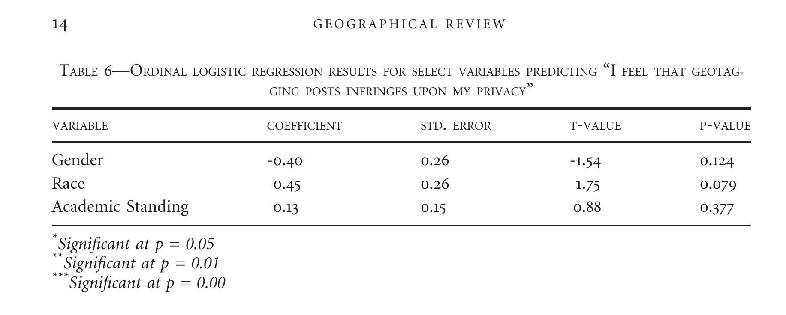

Location-based social media behavior and perceptions: Views of university students
Matthew Haffner1, Adam J. Mathews1,
Emily Fekete2, G. Allen Finchum1
1 - Department of Geography, Oklahoma State University
2 - American Association of Geographers
VGI and LBSM
- VGI (Goodchild 2007)
- Biases on platforms (Bartoshek and Kebler 2013; Stephens 2013; Mathews et al. 2013; Zickuhr 2013; Greenwood, Perrin, and Duggan 2016)
- Contributors' demographics have implications
Research focus
- Demographics, usage patterns, and perceptions
- Questions
- Are there differences in terms of gender, race, and academic standing?
- What are the implications?
Data
- 46 question survey with 7 sections
- Demographics
- Mobile phone and tablet use
- Social media use
- Geotagging on social media
- Instagram use
- Twitter use
- LBSM perceptions
- n = 253
Methods
- Differences in use: Chi-square tests
- Perception (Likert-scale items): Ordinal logistic regression
- Open-ended items: Qualitative summaries
Results

Results

"Geotagging social media posts is a good way to let my friends and my
followers know where I am and what I am up to."

Results

"I feel that geotagging infringes on my privacy."

Results

Why do you choose to geotag social media posts?
- "Usually it's just to further emphasize the caption."
- "[B]ecause where I am is important to the post."
- "Because where I am is part of the story being told by my post."
Why do you choose to geotag social media posts?
- "So that I can look back and remember where I was and what I was doing at certain times."
- "To remember where I was at the time of the post."
- "So I can remember where and what I did in my life."

Implications
- Twitter is reasonably representative
- Most differences are between males and females
- Motivating factor: locational journaling
- Users geotag content at places they visit infrequently
Haffner, M., Mathews, A. J., Fekete, E., Finchum, G. A. 2017.
Location-based social media behavior and perceptions: Views of
university students. Geographical Review doi: 10.1111/gere.12250.

References
Appendix
Survey respondents compared to the university
| Category | Item | University | Our Sample | |-------------------+------------------+------------+------------| | Race/ethnicity | White | 72.52% | 73.02% | | | African American | 4.89% | 3.57% | | | Native American | 4.78% | 4.37% | | | Hispanic | 6.31% | 1.59% | | | Asian | 1.87% | 4.76% | | | Pacific Islander | 0.12% | 0.40% | | | Muliracial | 8.75% | 10.32% | |-------------------+------------------+------------+------------| | Minority status | Minority | 26.73% | 26.98% | | | Non-minority | 73.27% | 73.02% | |-------------------+------------------+------------+------------| | Academic Standing | Freshman | 19.22% | 20.24% | | | Sophomore | 17.14% | 19.44% | | | Junior | 20.43% | 17.06% | | | Senior | 23.62% | 16.67% | | | Graduate student | 18.22% | 26.19% | |-------------------+------------------+------------+------------| | Gender | Female | 48.28% | 34.92% | | | Male | 51.72% | 63.92% | |-------------------+------------------+------------+------------|